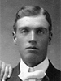

|
Mary Ellen Jacobson - 8 May 1879 - 27 Jan. 1959
Married Christen Christensen 25 Nov. 1898
The 1st child of Ole Hansen and Rebecca Deseret Dutson Jacobson
|
|  |
Ole William Jacobson - 5 Oct. 1880 - 18 Feb. 1970
Married Sylvia Alice Anderson 4 Oct. 1905
The 2nd child of Ole Hansen and Rebecca Deseret Dutson Jacobson
|
|
Ida Jane Jacobson - 14 Feb 1882 - 9 Oct. 1977
Married Joshua Finlinson 3 Oct. 1907
The 3rd child of Ole Hansen and Rebecca Deseret Dutson Jacobson
|
|
Maggie Ann Jacobson - 14 Aug 1883 - 30 Jan. 1974
Married Nathan Martin Lewis 1 Nov. 1916
The 4th child of Ole Hansen and Rebecca Deseret Dutson Jacobson
|
 |
Eddie Mathias Jacobson - 28 Nov. 1884 - 22 Sep 1972
Married Sarah Delilah Anderson  19 Aug 1907 19 Aug 1907
The 5th child of Ole Hansen and Rebecca Deseret Dutson Jacobson
|
|
Elizabeth Jacobson - 9 Oct. 1886 - 26 Jun 1979
Married Lem Roper 4 Dec 1907
The 6th child of Ole Hansen and Rebecca Deseret Dutson Jacobson
|
  |
Nellie Jacobson - 14 Feb. 1888 - 1 Sep. 1984
Married Bert Roper 7 Jun 1912
The 7th child of Ole Hansen and Rebecca Deseret Dutson Jacobson
|
|
Irving Elmer Jacobson - 12 Aug. 1889 - 16 Apr. 1973
Married Olive Milissa Prescott 9 Jun 1916
The 8th child of Ole Hansen and Rebecca Deseret Dutson Jacobson
|
|
Joseph Alfred Jacobson - 13 Oct. 1891 - 2 Feb. 1973
Married Ella Adelia Robinson 12 Sep 1917
The 9th child of Ole Hansen and Rebecca Deseret Dutson Jacobson
|
|
Alma Evan Jacobson - 20 Aug. 1893 - 30 Dec. 1979
Married Emma Bateman 3 May 1918
The 10th child of Ole Hansen and Rebecca Deseret Dutson Jacobson
|
  |
Ruby Rebecca Jacobson - 5 Apr. 1895 - 7 Mar. 1988 -
Married Alma Rich Lyman 3 Sep 1919
The 11th child of Ole Hansen and Rebecca Deseret Dutson Jacobson
|


{kind=link}
{kind=link}